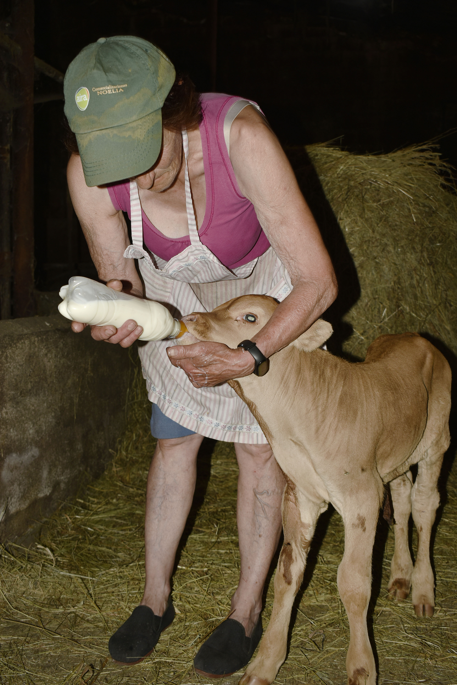
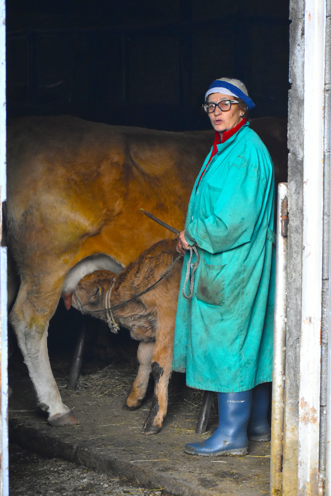

Artista: Kia Kurita
Fecha: 2025
Instagram: @kiakurita
Codigo QR seguimiento:

Descripción: Esta exposición es un homenaje a la mujer rural gallega, explorando su conexión con la tierra y la vida cotidiana. A través de una serie de obras que combinan fotografía, pintura y elementos multimedia, Kia Kurita invita al espectador a reflexionar sobre el papel fundamental de la mujer en el ámbito rural, destacando su fuerza, resiliencia y creatividad.
La muestra incluye retratos íntimos de mujeres trabajadoras, paisajes rurales vibrantes y elementos interactivos que permiten al público experimentar la vida en el campo desde una perspectiva femenina. Con un enfoque poético y sensible, la exposición busca visibilizar las historias de estas mujeres, muchas veces invisibilizadas en la narrativa cultural.
La obra de Kurita se caracteriza por su atención al detalle y su capacidad para capturar la esencia de sus sujetos. Utilizando técnicas mixtas, combina la fotografía con la pintura y el collage, creando piezas que son tanto visualmente impactantes como emocionalmente resonantes.
La exposición no solo celebra la vida de las mujeres en el campo, sino que también invita a una reflexión más amplia sobre la relación entre género, trabajo y medio ambiente. A través de su arte, Kurita busca empoderar a las mujeres rurales y dar voz a sus historias, destacando su papel crucial en la sostenibilidad de las comunidades rurales.
Colaboradores: Esta exposición cuenta con la colaboración de diversas asociaciones y colectivos que trabajan en la defensa de los derechos de las mujeres rurales, así como con el apoyo de instituciones culturales locales. Además, se realizarán talleres y charlas durante la exposición para fomentar el diálogo sobre estos temas.
Suspensión I

Suspensión I

Suspensión II

Suspensión III

Suspensión IV

Suspensión V

Suspensión VI

Suspensión VII

Suspensión VIII

Suspensión IX

Suspensión X
Suspensión XI

Suspensión XII

Suspensión XIII

Suspensión XIV